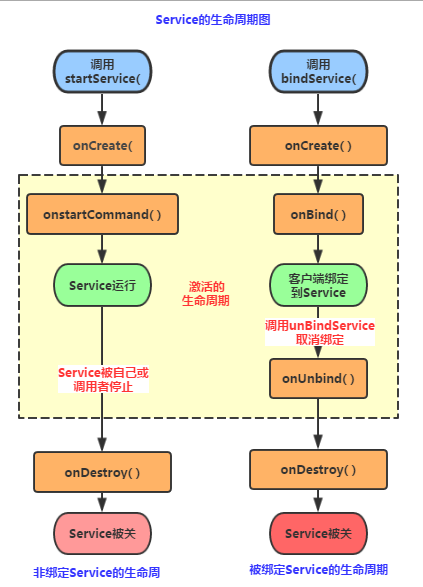
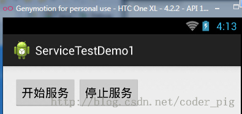
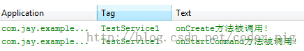
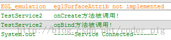
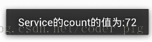
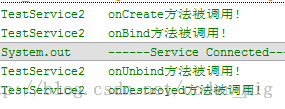
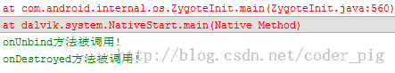

本節の導入
さて、私たちは前の3つの節でAndroidのActivityについて研究・学習しました。皆さん多くを学んだことでしょう！この節からはAndroidの2番目のコンポーネントであるService(サービス)について学んでいきます。では、余計な話は抜きにして、本節の内容を始めましょう！
1. スレッドの関連概念
Serviceを学び始める前に、まずスレッドに関するいくつかの概念を理解しましょう！
1) 関連概念:
- プログラム: 特定のタスクを完了するために、ある言語で書かれた一連の命令の集合（一組の静的コード)
- プロセス：実行中のプログラム、システムのスケジューリングとリソース割り当ての独立した単位、オペレーティングシステムは各プロセスにメモリ領域を割り当てます！プログラムが順次動的に実行され、コードのロード、実行、実行完了までの完全なプロセスを経ます！
- スレッド: プロセスより小さな実行単位で、各プロセスは複数のスレッドを持つことができます。スレッドは、1つのプロセス内に置かれて初めて実行できます。スレッドはプログラムによって管理され、一方プロセスはシステムによってスケジューリングされます！
- マルチスレッドの理解：並行して複数の命令を実行し、CPUタイムスライスをスケジューリングアルゴリズムに従って各スレッドに割り当てます。実際には時分割で実行されているだけで、この切り替え時間は非常に短いため、ユーザーは「同時に」実行されているように感じるだけです！
2) スレッドのライフサイクル:

3) スレッドを作成する3つの方法:
- Threadクラスを継承する
- Runnableインターフェースを実装する
- Callableインターフェースを実装するもし2で作成したスレッドを使用する場合は、このように直接起動できます：
new Thread(myThread).start();しかし、多くの場合、匿名クラスを使用するのが好まれます。つまり、次のような書き方です：new Thread(new Runnable(){ public void run(); }).start();
2. ServiceとThreadスレッドの違い
実はこの2つには大きな関係はありませんが、多くの方がよくこの2つを混同しています！Threadはスレッドであり、プログラム実行の最小単位、CPUを割り当てる基本単位です！一方、ServiceはAndroidが提供する、長期間バックグラウンドに留まることができるコンポーネントであり、最も一般的な使い方はポーリング操作を行うことです！または、バックグラウンドで何かをしたい場合、例えばバックグラウンドでのダウンロード更新などです！この2つの概念を混同しないようにしましょう！
3. Serviceのライフサイクル図

4. ライフサイクルの解析
さて、上の図のライフサイクルから、AndroidでServiceを使用する方法が2つあることがわかります：
1）StartService()によるServiceの起動
2）BindService()によるServiceの起動
PS: もう1つは、Serviceを起動した後にServiceをバインドする方法です！
1) 関連メソッドの詳細説明:
- onCreate(): Serviceが最初に作成された直後にこのメソッドがコールバックされます。このメソッドはライフサイクル全体で一度だけ呼び出されます！
- onDestory(): Serviceが閉じられるときにこのメソッドがコールバックされます。このメソッドは一度だけコールバックされます！
- onStartCommand(intent,flag,startId): 初期バージョンではonStart(intent, startId)でした。クライアントがstartService(Intent)メソッドを呼び出すとコールバックされます。StartServiceメソッドは複数回呼び出せますが、新しいServiceオブジェクトは作成されず、以前に生成されたServiceオブジェクトを再利用し続けます。ただし、onStartCommand()メソッドは引き続きコールバックされます！
- IBinder onOnbind(intent): このメソッドはServiceが必ず実装しなければならないメソッドであり、IBinderオブジェクトを返します。アプリはこのオブジェクトを通じてServiceコンポーネントと通信します！
- onUnbind(intent): このServiceにバインドされているすべてのクライアントが切断されたときに、このメソッドがコールバックされます！
2) StartServiceによるServiceの起動
①最初の起動ではServiceインスタンスが1つ作成され、onCreate()とonStartCommand()メソッドが順番に呼び出されます。このときServiceは実行状態に入ります。再度StartServiceを呼び出してServiceを起動しても、新しいServiceオブジェクトは作成されず、システムは以前に作成したServiceオブジェクトを直接再利用し、そのonStartCommand()メソッドを呼び出します！
②しかし、このようなServiceはその呼び出し元とは必然的な関係がありません。つまり、呼び出し元が自身のライフサイクルを終了しても、stopServiceを呼び出さない限り、Serviceは引き続き実行されます！
③Serviceを何度起動しても、StopServiceを1回呼び出すだけでServiceを停止できます。
3) BindServiceによるServiceの起動
①初めてbindServiceを使用してServiceにバインドするとき、システムはServiceインスタンスを1つ生成し、そのonCreate()とonBind()メソッドを呼び出します。その後、呼び出し元はIBinderを介してServiceと対話できます。以降、再度bindServiceを使用してServiceにバインドしても、システムは新しいServiceインスタンスを作成せず、onBind()メソッドも呼び出さず、単にIBinderオブジェクトを後から追加された他のクライアントに直接渡すだけです！
②サービスとのバインドを解除する場合は、unbindService()を呼び出すだけで済みます。このときonUnbindとonDestroyメソッドが呼び出されます！これはクライアントが1つの場合です。複数のクライアントが同じServiceにバインドしている場合は、次のようになります。あるクライアントがserviceとのやり取りを完了した後、unbindService()メソッドを呼び出してバインドを解除します。すべてのクライアントがserviceとのバインドを解除すると、システムはserviceを破棄します。（serviceがstartService()メソッドによって起動されている場合を除く）
③また、上記の状況とは異なり、bindServiceモードのServiceは呼び出し元と相互に関連付けられています。「1本のロープに繋がれたバッタ」、つまり運命を共にするものと理解できます。bindService後、呼び出し元が破棄されると、Serviceも即座に終了します！
BindServiceを使用してServiceを呼び出すときに呼び出されるContextのbindServiceの解析bindService(Intent Service,ServiceConnection conn,int flags)
service: このintentで起動するServiceを指定します
connServiceConnectionオブジェクト。訪問者とService間の接続状況を監視します。接続が成功すると、このオブジェクト内のonServiceConnected(ComponentName, IBinder)メソッドがコールバックされます。Serviceが存在するホストが異常終了やその他の理由で終了し、Serviceと訪問者間の接続が切断された場合に呼び出されます。onServiceDisconnected(ComponentName)メソッド。能動的にunBindService()メソッドで切断しても上記のメソッドは呼び出されません。
flags:バインド時にServiceを自動的に作成するかどうかを指定します（Serviceがまだ作成されていない場合）、パラメータは0（自動作成しない）、BIND_AUTO_CREATE（自動作成）にできます。
4) StartServiceでServiceを起動してからbindServiceでバインドする
もしServiceがすでに何らかのクライアントによってStartService()で起動され、次に他のクライアントがbindService()を呼び出してそのServiceにバインドし、その後unbindService()を呼び出してバインドを解除し、最後に再度bindService()を呼び出してServiceにバインドする場合、このときにトリガーされるライフサイクルメソッドは次のとおりです:
onCreate( )->onStartCommand( )->onBind( )->onUnbind( )->onRebind( )
PS:前提条件: onUnbind()メソッドがtrueを返すこと！！！ここで一部の読者は疑問に思うかもしれません。unbindServiceを呼び出した後、ServiceはonDestroy()メソッドを呼び出すべきではないのか！実際には、このServiceは私たちのStartServiceによって起動されたため、onUnbind()メソッドを呼び出してバインドを解除しても、Serviceは終了しません！
得られた結論:もし bindService を使って起動済みの Service をバインドする場合、注意：既に起動されている Service です!!! システムは Service の内部 IBinder オブジェクトを Activity に渡すだけで、Service のライフサイクルを Activity にバインドしません。そのため、unBindService() メソッドを呼び出してバインドを解除しても、Service は破棄されません！
5. ライフサイクルの検証
次に、コードを書いてライフサイクルを検証してみましょう：
1) StartServiceによるService起動の呼び出し順序の検証
まずカスタム Service を定義し、関連するメソッドをオーバーライドして、ユーザーが logcat に出力して検証します：
TestService1.java
public class TestService1 extends Service {
private final String TAG = "TestService1";
//必须要实现的方法
@Override
public IBinder onBind(Intent intent) {
Log.i(TAG, "onBind方法被调用!");
return null;
}
//Service被创建时调用
@Override
public void onCreate() {
Log.i(TAG, "onCreate方法被调用!");
super.onCreate();
}
//Service被启动时调用
@Override
public int onStartCommand(Intent intent, int flags, int startId) {
Log.i(TAG, "onStartCommand方法被调用!");
return super.onStartCommand(intent, flags, startId);
}
//Service被关闭之前回调
@Override
public void onDestroy() {
Log.i(TAG, "onDestory方法被调用!");
super.onDestroy();
}
}
AndroidManifest.xml で Service の登録を完了します
<!-- 配置Service组件,同时配置一个action -->
<service android:name=".TestService1">
<intent-filter>
<action android:name="com.jay.example.service.TEST_SERVICE1"/>
</intent-filter>
</service>
次に簡単なレイアウトファイル（2つのボタン）があり、最後に MainActivity を作成し、ボタンのクリックイベントでそれぞれ startService() と stopService() を呼び出します！
public class MainActivity extends Activity {
private Button start;
private Button stop;
@Override
protected void onCreate(Bundle savedInstanceState) {
super.onCreate(savedInstanceState);
setContentView(R.layout.activity_main);
start = (Button) findViewById(R.id.btnstart);
stop = (Button) findViewById(R.id.btnstop);
//创建启动Service的Intent,以及Intent属性
final Intent intent = new Intent();
intent.setAction("com.jay.example.service.TEST_SERVICE1");
//为两个按钮设置点击事件,分别是启动与停止service
start.setOnClickListener(new OnClickListener() {
@Override
public void onClick(View v) {
startService(intent);
}
});
stop.setOnClickListener(new OnClickListener() {
@Override
public void onClick(View v) {
stopService(intent);
}
});
}
}
実行スクリーンショット：

「サービス開始」をクリック：

暇つぶしに何度かクリック：

最後に「サービス停止」をクリック：

結果の分析：
上記の実行結果から、ライフサイクル図で説明した内容を検証できます： onBind() メソッドが呼び出されないこと、また Service 起動を複数回クリックしても onStartCommand メソッドが繰り返し呼び出されるだけであることがわかります。Service を何度起動しても、一度の stopService で Service は停止します！
2) BindServiceによるService起動の順序の検証:
コードを書き始める前に、いくつか理解しておく必要があります： まず最初の大きな図の下にある Context の bindService メソッドです：
- ServiceConnection オブジェクト：訪問者と Service 間の接続状況を監視します。接続が成功すると onServiceConnected() をコールバックします。異常終了やその他の理由で Service と訪問者との接続が切断された場合は onServiceDisconnected メソッドをコールバックします。unBindService() を呼び出してもこのメソッドは呼び出されません！
- onServiceConnected メソッドには IBinder オブジェクトがあり、このオブジェクトによってバインドされた Service との通信が可能になります。Service クラスを開発する際、通常は IBinder onBind() メソッドを実装する必要があります。このメソッドが返す IBinder オブジェクトは ServiceConnection オブジェクトの onServiceConnected のパラメータに渡されるため、ここでこの IBinder を通じて Service と通信できます。
まとめ：
Step 1:カスタム Service で Binder を継承し、独自の IBinder オブジェクトを実装します
Step 2:onBind() メソッドで独自の IBinder オブジェクトを返します
Step 3:この Service をバインドするクラス内で ServiceConnection オブジェクトを定義し、onServiceConnected と onDisconnected の2つのメソッドをオーバーライドします！そして IBinder から渡されたパラメータを直接読み取るだけです！
では、次にコードを書いて検証します。ここでは計時（タイマー）用の Service を定義し、BindService の使い方とメソッド呼び出しの流れをデモンストレーションします。コードは比較的簡単なので説明は省略します！
TestService2.java:
public class TestService2 extends Service {
private final String TAG = "TestService2";
private int count;
private boolean quit;
//定义onBinder方法所返回的对象
private MyBinder binder = new MyBinder();
public class MyBinder extends Binder
{
public int getCount()
{
return count;
}
}
//必须实现的方法,绑定改Service时回调该方法
@Override
public IBinder onBind(Intent intent) {
Log.i(TAG, "onBind方法被调用!");
return binder;
}
//Service被创建时回调
@Override
public void onCreate() {
super.onCreate();
Log.i(TAG, "onCreate方法被调用!");
//创建一个线程动态地修改count的值
new Thread()
{
public void run()
{
while(!quit)
{
try
{
Thread.sleep(1000);
}catch(InterruptedException e){e.printStackTrace();}
count++;
}
};
}.start();
}
//Service断开连接时回调
@Override
public boolean onUnbind(Intent intent) {
Log.i(TAG, "onUnbind方法被调用!");
return true;
}
//Service被关闭前回调
@Override
public void onDestroy() {
super.onDestroy();
this.quit = true;
Log.i(TAG, "onDestroyed方法被调用!");
}
@Override
public void onRebind(Intent intent) {
Log.i(TAG, "onRebind方法被调用!");
super.onRebind(intent);
}
}
AndroidManifest.xml で Service コンポーネントを登録します：
<service android:name=".TestService2" android:exported="false">
<intent-filter>
<action android:name="com.jay.example.service.TEST_SERVICE2"/>
</intent-filter>
</service>
MainActivity.java:
public class MainActivity extends Activity {
private Button btnbind;
private Button btncancel;
private Button btnstatus;
//保持所启动的Service的IBinder对象,同时定义一个ServiceConnection对象
TestService2.MyBinder binder;
private ServiceConnection conn = new ServiceConnection() {
//Activity与Service断开连接时回调该方法
@Override
public void onServiceDisconnected(ComponentName name) {
System.out.println("------Service DisConnected-------");
}
//Activity与Service连接成功时回调该方法
@Override
public void onServiceConnected(ComponentName name, IBinder service) {
System.out.println("------Service Connected-------");
binder = (TestService2.MyBinder) service;
}
};
@Override
protected void onCreate(Bundle savedInstanceState) {
super.onCreate(savedInstanceState);
setContentView(R.layout.activity_main);
btnbind = (Button) findViewById(R.id.btnbind);
btncancel = (Button) findViewById(R.id.btncancel);
btnstatus = (Button) findViewById(R.id.btnstatus);
final Intent intent = new Intent();
intent.setAction("com.jay.example.service.TEST_SERVICE2");
btnbind.setOnClickListener(new OnClickListener() {
@Override
public void onClick(View v) {
//绑定service
bindService(intent, conn, Service.BIND_AUTO_CREATE);
}
});
btncancel.setOnClickListener(new OnClickListener() {
@Override
public void onClick(View v) {
//解除service绑定
unbindService(conn);
}
});
btnstatus.setOnClickListener(new OnClickListener() {
@Override
public void onClick(View v) {
Toast.makeText(getApplicationContext(), "Service的count的值为:"
+ binder.getCount(), Toast.LENGTH_SHORT).show();
}
});
}
}
実行スクリーンショット：

「Service をロック」をクリック：

さらに「ロック」をクリック：何の変化もありません

現在の Service の状態を取得：

バインド解除：

バインド後に Activity を直接閉じるとエラーが発生します。 その後、自動的に onUnbind と onDestory メソッドが呼び出されます！
 。。。
。。。

上記の実行結果から、ライフサイクル図の以下を検証できます：
BindService を使用して Service をバインドすると、onCreate()、onBind() メソッドが順に呼び出されます。onBind() メソッド内でカスタムの IBinder オブジェクトを返すことができます。次に呼び出されるのは ServiceConnection の onServiceConnected() メソッドで、このメソッド内で IBinder オブジェクトを取得し、関連する操作を行うことができます。Service のバインドが解除されると、自動的に onUnbind と onDestroyed メソッドが呼び出されます。もちろん、複数のクライアントをバインドしている場合は、すべてのバインドを解除して初めて onDestoryed メソッドが呼び出されて破棄されますよ！